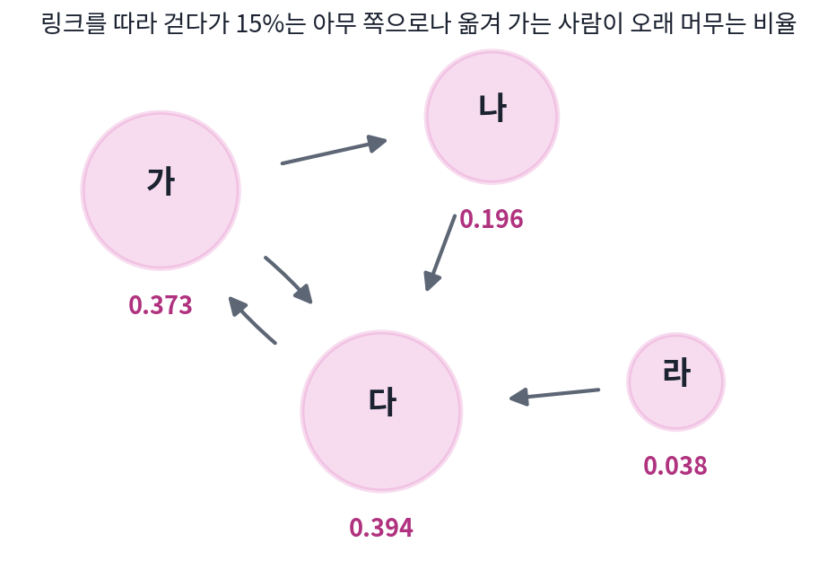

정상 분포: 오래 돌리면 처음을 잊는다
마르코프가 센 2만 자에서 모음은 전체의 0.432를 차지했다. 그런데 체인으로 만든 가짜 글은 모음에서 시작하느냐 자음에서 시작하느냐에 따라 첫 몇 글자의 모습이 다르다. 모음에서 시작하면 둘째 글자는 0.872의 확률로 자음이고, 자음에서 시작하면 0.663의 확률로 모음이다. 그렇다면 글자를 충분히 많이 뽑은 뒤에는 어떨까? 처음 글자의 흔적이 계속 남을까, 아니면 어디서 시작했든 모음이 나올 확률은 0.432 근처로 모일까?
역사: 오래 떠도는 사람이 머무는 곳
1998년 스탠퍼드 대학원생이던 세르게이 브린과 래리 페이지는 웹 검색 엔진의 설계를 발표하면서, 웹 페이지마다 중요도를 하나씩 매기는 방법을 내놓았다. 그들은 이 중요도(페이지랭크)를 링크를 따라 웹을 떠도는 사람으로 설명했다. 이 사람은 지금 보는 쪽에 걸린 링크 가운데 하나를 아무렇게나 골라 옮겨 가다가, 가끔은 싫증이 나서 아무 쪽으로나 건너뛴다. 이렇게 아주 오래 떠돌았을 때 그 사람이 어떤 쪽에 머무는 시간의 비율이 그 쪽의 페이지랭크(PageRank)다. 많이 가리켜지는 쪽, 그리고 중요한 쪽이 가리키는 쪽일수록 그 사람이 자주 들르게 된다. 그들은 건너뛰지 않고 링크를 따라갈 확률을 보통 0.85로 둔다고 적었다.
떠도는 사람이 오래 머무는 곳
쪽이 넷뿐인 작은 웹으로 해 보자. 가는 나와 다를, 나는 다를, 다는 가를, 라는 다를 가리킨다. 떠도는 사람은 0.85의 확률로 지금 쪽의 링크 가운데 하나를 고르게 골라 옮겨 가고, 0.15의 확률로 네 쪽 가운데 아무 곳으로나 건너뛴다. 처음에는 네 쪽에 고르게 있었다고 하고, 스텝마다 어느 쪽에 있을 확률을 계산하면 다음과 같다.
| 스텝 수 | 가 | 나 | 다 | 라 |
|---|---|---|---|---|
| 0 | 0.250 | 0.250 | 0.250 | 0.250 |
| 1 | 0.250 | 0.144 | 0.569 | 0.038 |
| 2 | 0.521 | 0.144 | 0.298 | 0.038 |
| 5 | 0.389 | 0.203 | 0.371 | 0.038 |
| 10 | 0.375 | 0.195 | 0.393 | 0.038 |
| 20 | 0.373 | 0.196 | 0.394 | 0.038 |
| 50 | 0.373 | 0.196 | 0.394 | 0.038 |
스무 스텝쯤 지나면 표의 숫자가 더는 바뀌지 않는다. 가를 가리키는 링크는 다에서 오는 하나뿐인데도 가의 방문 비율(0.373)은 링크를 셋이나 받는 다(0.394)와 거의 같다. 가장 많이 들르는 다가 링크를 보내는 페이지가 가 하나뿐이기 때문이다. 아무도 가리키지 않는 라에는 건너뛸 때만 들르므로 0.15 ÷ 4 = 0.0375만 남는다.

페이지랭크 표의 방문 비율이 스무 스텝 뒤에는 더 바뀌지 않는다는 것을 식으로 적어 보자. n스텝 뒤 어느 상태에 있을 확률을 늘어놓은 줄을 pₙ이라 하면, 한 스텝 뒤의 확률은 상태마다 「거기 있다가 옮겨 올 확률」을 모두 더한 것이므로 pₙ₊₁ = pₙP다. 오래 돌려 더는 바뀌지 않는 확률을 π(파이, pi)라 하면, 한 스텝을 더 가도 그대로이므로 다음 식이 성립한다.
이렇게 체인을 한 스텝 더 돌려도 바뀌지 않는 확률 분포를 정상 분포 (시간이 지나도 변하지 않는 분포, stationary distribution)라 한다. 「정상」은 「멈춰 있다」는 뜻이고, 이름이 비슷한 정규분포와는 다른 말이다. 선형대수로 말하면 π는 고윳값이 1인 P의 왼쪽 고유벡터를 합이 1이 되게 나눈 것이다. 페이지랭크를 계산할 때 쓰는 방법도 위의 표 그대로, 아무 분포에서 시작해 P를 거듭 곱하는 것이다.
처음을 잊는 속도와 두 번째 고윳값
모음과 자음의 체인으로 돌아가자. 모음에서 시작한 체인과 자음에서 시작한 체인이 n번째 글자에서 모음일 확률을 계산하면 다음과 같다.
| 글자 번호 n | 0 | 1 | 2 | 3 | 4 | 5 | 6 | 7 | 8 |
|---|---|---|---|---|---|---|---|---|---|
| 모음에서 시작 | 1.000 | 0.128 | 0.595 | 0.345 | 0.479 | 0.407 | 0.445 | 0.425 | 0.436 |
| 자음에서 시작 | 0.000 | 0.663 | 0.308 | 0.498 | 0.396 | 0.451 | 0.422 | 0.437 | 0.429 |
두 줄은 위아래로 엇갈리며 0.432로 모인다. 이 값은 정상 분포의 식 π(모음) = π(모음) × 0.128 + (1 − π(모음)) × 0.663을 풀어도 나오고, 마르코프가 센 전체 모음 비율 8,638 ÷ 20,000 = 0.432와도 같다. 두 줄의 차이는 1, −0.535, 0.286, …으로 스텝마다 −0.535배가 된다. 이 −0.535가 전이 행렬의 두 번째 고윳값 λ(람다)이고, 상태가 둘인 체인에서는 0.128 − 0.663, 곧 「모음 뒤 모음일 확률 − 자음 뒤 모음일 확률」이다. 고윳값이 음수라서 두 줄이 엇갈리고, 크기가 1보다 작아서 차이가 줄어든다. 크기가 1에 가까울수록 체인은 처음을 오래 기억한다.
ML에서: 디퓨전 모델의 노이즈 섞기
디퓨전 모델은 그림에 노이즈를 조금씩 여러 번 섞는 과정을 먼저 정해 둔다. 한 스텝에서는 지금 그림만 보고 다음 그림을 만들므로 이것도 마르코프 체인이다. 이 체인은 어떤 그림에서 시작하든 충분히 많이 섞으면 같은 정규분포에 닿도록 설계되어 있다. 그 정규분포가 이 체인의 정상 분포이고, 처음 그림을 잊는다는 이 성질 덕분에 생성할 때는 그림 없이 노이즈에서 출발할 수 있다.
길잡이 · 『MLP에서 디퓨전 트랜스포머까지』 「순방향 과정: 그림에 노이즈를 조금씩 섞기」 그림에 노이즈를 조금씩 섞는 과정을 왜 그렇게 정했는지, 두 번 섞은 노이즈의 크기와 섞는 비율을 맞춰 끝이 정규분포로 모이게 하는 법. 이어 읽기
문제 4. 공유 자전거 두 정류장
공유 자전거 정류장이 가와 나 두 곳뿐이다. 밤사이 가에 있던 자전거의 30%는 나로 옮겨 가고, 나에 있던 자전거의 20%는 가로 옮겨 간다. 첫날 아침 자전거 100대가 모두 가에 있었다. (가) 오래 지나면 가에는 몇 대가 있게 되는가? (나) 가의 자전거가 (가)에서 구한 값과 1대 넘게 차이 나지 않게 되는 것은 며칠째부터인가? (풀어 본 뒤 위젯 1의 「문제 4 불러오기」로 확인해 보자.)

옮겨 가는 비율이 30%랑 20%로 비슷하니까, 오래 지나면 반반쯤 되지 않을까요? 50대씩요.

가에 50대, 나에 50대가 있다고 해 봐요. 밤사이 가에서 나로 몇 대, 나에서 가로 몇 대가 옮겨 가죠?

가에서 15대가 나가고 나에서 10대가 들어오니까, 가가 5대 줄어요. 반반에서는 안 멈추네요.

멈추려면 나가는 대수와 들어오는 대수가 같아야 하니까, 가의 대수를 a라 하면 0.3a = 0.2(100 − a)야. a = 40. 오래 지나면 가에 40대, 나에 60대야.

좋아요. 그럼 (나)는요? 첫날 가에 100대였으니 40대보다 60대 많아요. 그 60대 차이가 하루에 얼마씩 줄어들까요?

차이를 d라 하면 가에서 0.3, 나에서 0.2만큼 서로 바뀌니까 차이는 하루에 1 − 0.3 − 0.2 = 0.5배가 돼요. 60, 30, 15, 7.5, 3.75, 1.88, 0.94니까 엿새째 밤을 지난 날부터 1대 안으로 들어와요. 이 0.5가 두 번째 고윳값이네요.

처음에 나에 100대를 다 두어도 40대로 가겠네요. 0, 20, 30, 35, … 이렇게요. 처음 배치는 결국 잊히는 거고요. 신입생이 처음에 어느 동아리에 몰려 있든, 해마다 옮겨 다니는 비율이 같으면 몇 년 뒤엔 동아리 크기가 비슷하게 자리 잡는 거랑 같네요.
문제 5. 0.001 안에 들기까지
모음과 자음의 체인에서 모음 다음이 모음일 확률은 0.128, 자음 다음이 모음일 확률은 0.663이다. (가) 모음에서 시작한 체인이 n번째 글자에서 모음일 확률이 정상 분포의 값 0.432와 0.001 넘게 차이 나지 않게 되는 것은 몇 번째 글자부터인가? (나) 정상 분포는 0.432로 같으면서 두 번째 고윳값이 +0.535인 체인을 만들면, 두 줄은 어떤 모양으로 모이는가?
표에서 8번째 글자가 0.436이니까 차이가 0.004예요. 조금만 더 가면 되겠네요. 9번째쯤이요.
차이가 스텝마다 몇 배가 되는지 알고 있죠? 그걸로 계산해 봐요.
처음 차이가 1 − 0.432 = 0.568이고 스텝마다 −0.535배니까, n번째 차이의 크기는 0.568 × 0.535ⁿ이에요. 이게 0.001보다 작으려면 n ≥ ln(568)/ln(1/0.535) ≈ 10.2. 9번째는 0.0021, 10번째는 0.0011이라 아직이고, 11번째에서 0.0006이 되니까 11번째부터예요.
아, 8번째에서 9번째로 갈 때 차이가 반만 줄어드는 걸 생각 안 했어요. 0.004가 0.002가 되고, 또 0.001이 되는 데 두 스텝이 더 걸리네요.
(나)는요? 두 번째 고윳값은 상태가 둘이면 「모음 뒤 모음 확률 − 자음 뒤 모음 확률」이었어요.

정상 분포가 0.432로 같으려면 두 확률을 0.736과 0.201로 잡으면 돼요. 그러면 차이가 스텝마다 +0.535배라서 부호가 안 바뀌어요. 모음에서 시작하면 1, 0.736, 0.595, 0.519, 0.479, …처럼 위에서 한쪽으로만 내려오고, 차이가 줄어드는 속도는 스텝마다 0.535배로 같아요. 고윳값의 크기 |λ|가 그 속도를, 부호가 모양을 정하는 거네요.

앞의 체인은 모음과 자음을 번갈아 쓰려는 글이고, 이 체인은 같은 쪽이 몰려 나오는 글이네요. 둘 다 결국 0.432로 가는데 가는 길이 다르고요.
문제 6. 갇힌 쪽과 건너뛰기
쪽이 다섯인 웹이 있다. 가는 나를, 나는 다를, 다는 가와 라를 가리키고, 라와 마는 서로만 가리킨다. (가) 건너뛰기 없이 링크만 따라 떠도는 사람은 오래 지나면 어디에 있는가? (나) 0.85의 확률로 링크를 따르고 0.15의 확률로 아무 쪽으로나 건너뛰면 어떻게 되는가?
고르게 놓고 거듭 곱해 봤어요. 100스텝쯤 지나면 가·나·다는 0이고 라가 0.467, 마가 0.533이에요. 그런데 200스텝에서도 같은 값이 나와서 이게 정상 분포인 것 같아요.
라와 마는 서로만 가리키니까 한번 들어가면 못 나오네. 그러니 가·나·다가 0이 되는 건 맞아. 그런데 라와 마는 서로 반드시 바뀌잖아. 101스텝째를 봐.

101스텝째는 라가 0.533, 마가 0.467이에요. 짝수 스텝이랑 홀수 스텝에서 값이 맞바뀌네요. 100이랑 200이 둘 다 짝수라서 멈춘 것처럼 보였던 거예요.

두 가지가 한꺼번에 나왔어요. 들어가면 못 나오는 곳이 있어서 다른 쪽들이 모두 0이 되었고, 그 안에서는 두 스텝마다 제자리로 돌아오는 주기가 있어서 확률이 멈추지 않아요. 그럼 (나)는요?
건너뛰기가 있으면 어느 쪽에서든 어느 쪽으로든 갈 수 있으니까 갇힌 곳이 없어지고, 한 스텝에 제자리로 올 수도 있으니까 주기도 깨져요. 계산하면 가 0.077, 나 0.096, 다 0.111, 라 0.371, 마 0.345로 멈춰요. 라와 마가 여전히 많지만 가·나·다도 0이 아니고요.
브린과 페이지가 건너뛰기를 넣은 까닭도 이거예요. 실제 웹에는 바깥으로 가는 링크가 없는 페이지나, 자기들끼리만 서로 가리키는 페이지 묶음이 흔하거든요. 0.15만큼의 건너뛰기가 정상 분포를 하나로 정해 주고, 앞에서 본 두 번째 고윳값의 크기도 0.85를 넘지 않게 묶어서 몇십 스텝이면 계산이 끝나게 해요.

「아무 데나 가끔 건너뛴다」는 대충 넣은 장치인 줄 알았는데, 답이 하나로 정해지게 해 주는 장치였네요.